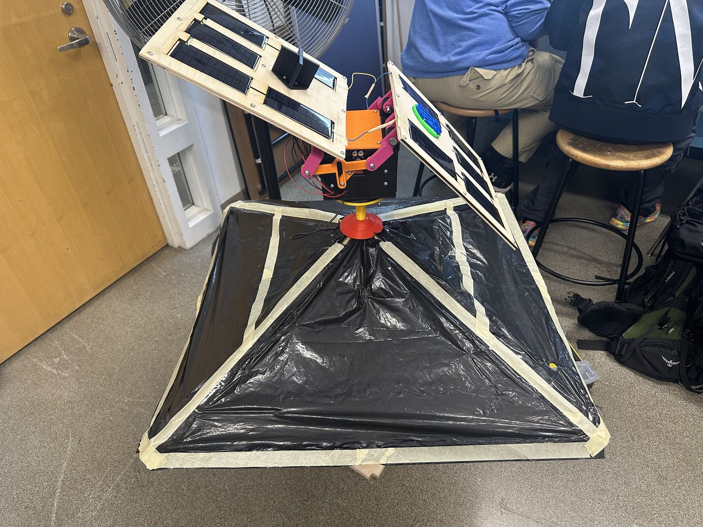
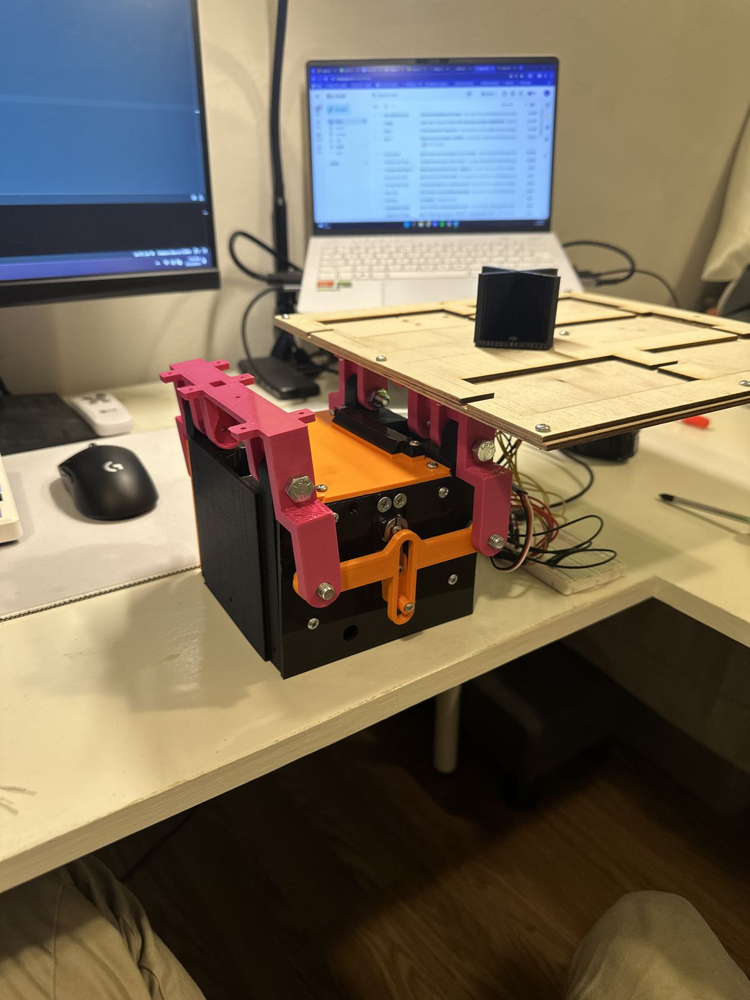
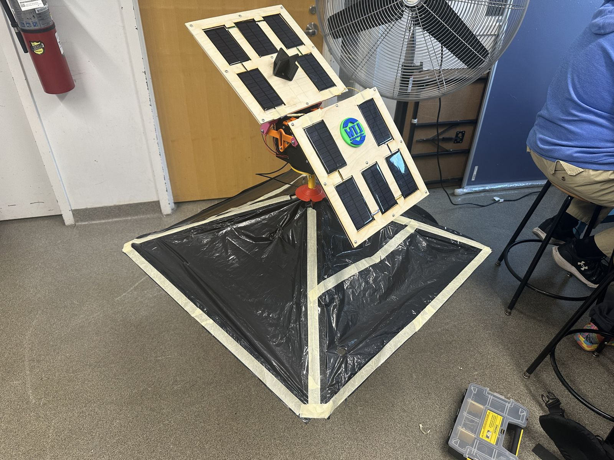
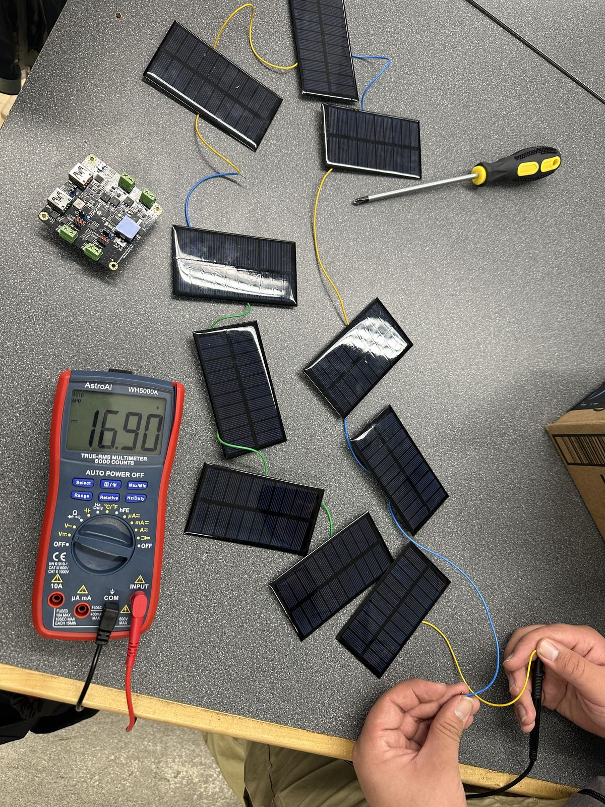

An umbrella whose solar panels turn to face the light. It runs C++ on an Arduino, with a 3D-printed, laser-cut mechanism and hand-wired panel arrays.
Over a full simulated day: . That’s with perfect geometry. The real prototype measured up to 25%, likely because fixed panels still catch diffuse light and the mechanism isn’t perfect.



